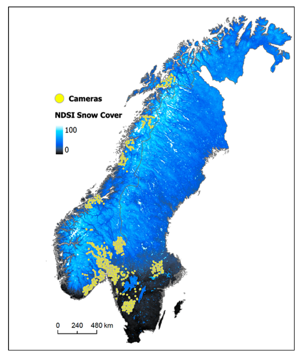
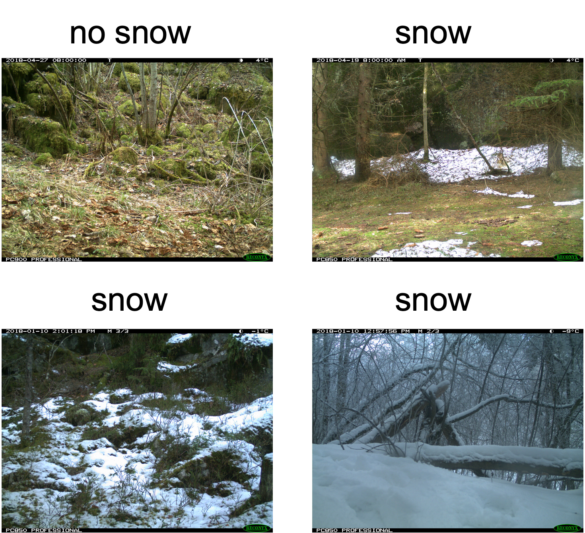
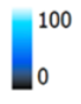
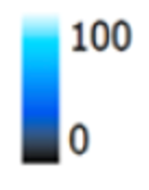

Data Preparation
Contents
Data Preparation#
In this chapter, we will:
map the camera locations used for this tutorial
label camera trap images for “snow” or “no snow”
extract satellite snow values at camera trap locations for all days of the study period
“merge” two datasets together based on date and location
Camera trap dataset#
Previous work to convert MODIS NDSI snow cover maps have used finer-scale resolution satellites, like Landsat, to identify at what threshold the NDSI value represents “snow” or “no snow.” Here we use a network of camera traps as the fine-scale ground data. While they are limited in spatial scale to their field of view (20-30m), they can be set up in networks of up to 1000s of cameras, which, when done in large regions, approaches the coverage of satellite maps. Their ability to cover large regions and observe environmental information makes them a advantegous ground-based data source to compare to satellite information.
The camera trap network that we will use is part of the Scandcam network (website: viltkamera.nina.no). Scandcam is a long-term, year-round study established in 2010 by the Norwegian Institute for Nature Research to monitor recovering Eurasian lynx (Lynx lynx). Optimized for lynx detection, the cameras are placed in mostly forested habitats and areas that lynx use (e.g., wildlife trails, forest roads, and along the base of cliffs/boulders) (Angoh et al. 2023).
Below is a map of locations of Scandcam cameras (yellow points: n = 1181) in Norway and Sweden. Camera data for this tutorial is from three winters (January - March 2018, October 2018 - April 2019, October 2019 - April 2020). MODIS NDSI Snow Cover base map is from the same corresponding winters. It is a composite snow cover map created from mean MODIS NDSI snow cover values from the study period. The cameras spread a 10 degree latitudinal gradient (59 - 69 degrees North, and 8-16 degrees East), with no more than one camera per 2km2 area across a 350,000 km2 area. Seeing both the MODIS NDSI and camera trap locations together shows the large coverage of the cameras, and subsequently their ability to indicate snow presence versus absence in a variety of conditions.
figure citation: Breen et al. 2023
But, How do we get the snow information from the cameras?
When a camera trap takes a picture, it reports the time of day, the temperature, even the moon phase, but it does not automatically provide an indication of how much snow is in the image. It is up to the researcher to extract, or label, the image for the amount of snow.
To extract the binary snow information from the camera images to make custom satellite-based snow maps, we must label images for ‘snow’ or ‘no snow’. We will later compare these values to what the satellite reported, and determine what threshold the satellite agrees with the “snow” images for snow, and what values the satellite best agrees with the images for “no snow.” Below are two examples of images labeled for snow. The image on the left is labeled “no snow,” and the image on the right is labeled “snow.”

Of course, there are times when the snow is patchy, and it is hard to determine whether it is “snow” or “no snow.” Thus, there is some uncertainty when labelling images because labeling patchy snow is subjective. For our dataset, we labeled any image with approximately 25% snow or more as “snow.”
We have already labeled the dataset for you. In total, we labeled 8,918 images across 665 cameras. We labeled only 1 image per day, deferring to the “time-lapse” image, or the image that was taken at a set time every day. In this case 8AM. This way we ensured that there was consistency between when the satellite passed over the area and when the camera took the photo. Having one per day also allowed us to have a variety of snow conditions from different areas. Additionally, we only labelled daytime photos because snow is easier to see.
Satellite dataset#
Now that we have our camera images labeled for snow and no snow, we will now pull the satellite data. As a reminder, the satellite data reports snow on a scale of 0-100, and we are hoping to determine what NDSI value will best threshold the values for this region to snow or no snow.
First, we must gather all MODIS maps for all days of interest. This can be done using Google Earth Engine. Google Earth Engine contains the MODIS NDSI dataset (https://developers.google.com/earth-engine/datasets/catalog/MODIS_061_MOD10A1). Google Earth Engine can be run in Python or in Java on the Google Earth Engine Code Editor. Running Google Earth Engine requires an account, so we will not show set-up here, but information on access to Google Earth Engine in Python or Java can be found here:
https://developers.google.com/earth-engine/guides/access
For now, we will show a screenshot of an example raster of satellite information from MODIS. The colors range between black (no snow) and white (snow), with intermediate values of snow different shades of blue (color bar is below the map). The range of colors show the variety of snow cover values in southern Norway on one day. The code for visualizing and extracting MODIS snow information is here:
 

Next we conduct a extraction of the MODIS NDSI value for every day of our time period of interest for every camera trap location. We conducted this in the Google Earth Code Editor and exported as a csv.
Putting it together#
After we have all the snow information at the camera data and the satellite information. We will conduct a “merge” in python to put the two datasets together. We will match based on day and location so that each observation is date, location, satellite value and camera value. We have already taken care of this step outside of the tutorial and code for the merge step can be found here: https://github.com/catherine-m-breen/MODIS-Snow-Cover-to-Binary-Snow-Covered-Area/blob/main/analysis
A sample of the dataset is below. We have hid the locations for this tutorial in order to protect the privacy of the Scandcam network. We will use the pandas library in python to read in the csv.
# load packages
import pandas as pd
# pre-cleaned dataset for tutorial
url = 'https://github.com/catherine-m-breen/binarysnowmaps/blob/main/book/img/data.csv'
path = './imgs/data.csv'
# read in dataset
df = pd.read_csv(url, index_col=0, error_bad_lines=False)
df = pd.read_csv(path, index_col=0, error_bad_lines=False)
print(df)
/var/folders/yv/mzlh10ts71lg0nhr7pw_0q080000gn/T/ipykernel_70080/942009331.py:8: FutureWarning: The error_bad_lines argument has been deprecated and will be removed in a future version. Use on_bad_lines in the future.
df = pd.read_csv(url, index_col=0, error_bad_lines=False)
Date SnowCover NDSImodis
cameraID
X 1/7/18 1 61
X 1/7/18 0 48
X 1/19/18 1 59
X 1/7/18 1 53
X 1/19/18 1 73
... ... ... ...
X 3/25/18 1 15
X 3/30/18 1 0
X 3/18/18 1 73
X 1/19/18 1 72
X 1/19/18 1 59
[8918 rows x 3 columns]
b'Skipping line 33: expected 1 fields, saw 8\nSkipping line 112: expected 1 fields, saw 3\nSkipping line 145: expected 1 fields, saw 2\nSkipping line 224: expected 1 fields, saw 3\nSkipping line 233: expected 1 fields, saw 6\nSkipping line 265: expected 1 fields, saw 4\nSkipping line 278: expected 1 fields, saw 4\nSkipping line 291: expected 1 fields, saw 4\nSkipping line 304: expected 1 fields, saw 4\nSkipping line 317: expected 1 fields, saw 4\nSkipping line 330: expected 1 fields, saw 4\nSkipping line 343: expected 1 fields, saw 4\nSkipping line 356: expected 1 fields, saw 4\nSkipping line 374: expected 1 fields, saw 4\nSkipping line 381: expected 1 fields, saw 4\nSkipping line 390: expected 1 fields, saw 4\nSkipping line 399: expected 1 fields, saw 4\nSkipping line 425: expected 1 fields, saw 4\nSkipping line 432: expected 1 fields, saw 4\nSkipping line 439: expected 1 fields, saw 4\nSkipping line 446: expected 1 fields, saw 4\nSkipping line 460: expected 1 fields, saw 4\nSkipping line 467: expected 1 fields, saw 4\nSkipping line 476: expected 1 fields, saw 4\nSkipping line 490: expected 1 fields, saw 4\nSkipping line 497: expected 1 fields, saw 8\nSkipping line 498: expected 1 fields, saw 3\nSkipping line 506: expected 1 fields, saw 4\nSkipping line 531: expected 1 fields, saw 4\nSkipping line 546: expected 1 fields, saw 4\nSkipping line 562: expected 1 fields, saw 4\nSkipping line 569: expected 1 fields, saw 4\nSkipping line 576: expected 1 fields, saw 4\nSkipping line 589: expected 1 fields, saw 3\nSkipping line 609: expected 1 fields, saw 2\nSkipping line 630: expected 1 fields, saw 5\nSkipping line 808: expected 1 fields, saw 2\nSkipping line 879: expected 1 fields, saw 2\nSkipping line 902: expected 1 fields, saw 6\nSkipping line 903: expected 1 fields, saw 3\nSkipping line 910: expected 1 fields, saw 6\nSkipping line 911: expected 1 fields, saw 3\nSkipping line 1032: expected 1 fields, saw 6\nSkipping line 1039: expected 1 fields, saw 6\nSkipping line 1048: expected 1 fields, saw 6\nSkipping line 1072: expected 1 fields, saw 4\nSkipping line 1084: expected 1 fields, saw 4\nSkipping line 1096: expected 1 fields, saw 4\nSkipping line 1108: expected 1 fields, saw 4\nSkipping line 1120: expected 1 fields, saw 4\nSkipping line 1132: expected 1 fields, saw 4\nSkipping line 1143: expected 1 fields, saw 4\nSkipping line 1226: expected 1 fields, saw 35876\nSkipping line 1254: expected 1 fields, saw 2\nSkipping line 1262: expected 1 fields, saw 3\nSkipping line 1263: expected 1 fields, saw 3\nSkipping line 1264: expected 1 fields, saw 3\nSkipping line 1265: expected 1 fields, saw 3\nSkipping line 1266: expected 1 fields, saw 3\nSkipping line 1267: expected 1 fields, saw 3\nSkipping line 1268: expected 1 fields, saw 3\nSkipping line 1269: expected 1 fields, saw 3\nSkipping line 1270: expected 1 fields, saw 3\nSkipping line 1271: expected 1 fields, saw 3\nSkipping line 1272: expected 1 fields, saw 3\n'
/var/folders/yv/mzlh10ts71lg0nhr7pw_0q080000gn/T/ipykernel_70080/942009331.py:9: FutureWarning: The error_bad_lines argument has been deprecated and will be removed in a future version. Use on_bad_lines in the future.
df = pd.read_csv(path, index_col=0, error_bad_lines=False)
# visualize dataset
df.head()
| Date | SnowCover | NDSImodis | |
|---|---|---|---|
| cameraID | |||
| X | 1/7/18 | 1 | 61 |
| X | 1/7/18 | 0 | 48 |
| X | 1/19/18 | 1 | 59 |
| X | 1/7/18 | 1 | 53 |
| X | 1/19/18 | 1 | 73 |
As you can see for every location and date, there is a snow cover value of either 0 or 1 and a corresponding MODIS NDSI value that ranges from 0 to 100. In the next section, we will show how to conduct a threshold analysis to determine the best NDSI threshold to convert the NDSI modis values also to 0 (no snow) or 1 (snow).